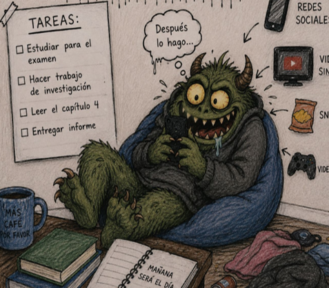

Los monstruos domésticos son criaturas imaginarias que explican esas costumbres raras que aparecen en la vida diaria. No dan miedo como un monstruo de película, pero sí molestan, distraen, cansan o hacen perder tiempo.
Pospón es grande, gris y silencioso. No da miedo con gritos ni dientes afilados. Su poder es más peligroso: hace que las personas dejen todo para después.
Pospón aparece cuando alguien tiene que estudiar, trabajar, entrenar o cumplir un sueño importante. Se sienta en el hombro y susurra: “Hazlo más tarde”, “todavía tienes tiempo”, “primero mira el celular”.
Es un monstruo que nos roba tiempo, energía, confianza y oportunidades. Mientras más lo escuchas, más fuerte se vuelve. Hace que las tareas pequeñas parezcan enormes y que las metas importantes se sientan imposibles.
Para vencer a Pospón tenemos que dejar la pereza, tener disciplina y ser constantes, porque cuando él siente que somos constantes, su magia empieza a perder poder.